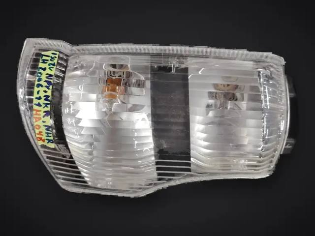
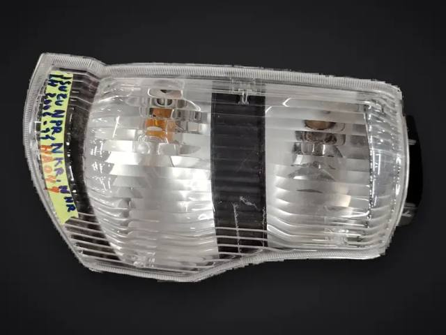
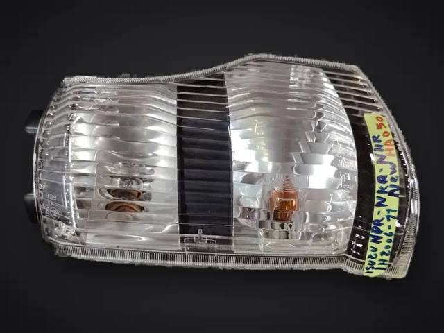
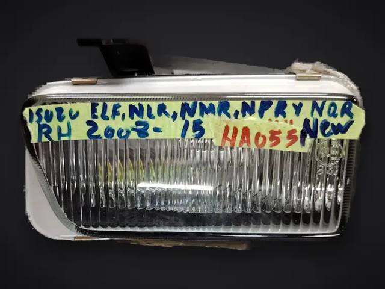
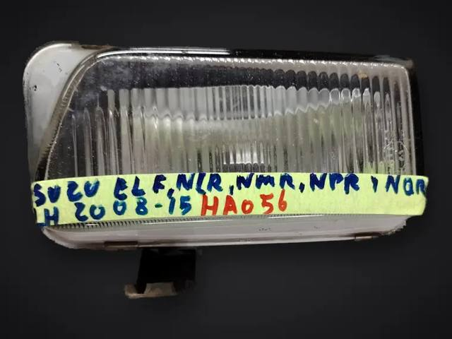

Piezas de carrocería para Isuzu NPR
8 piezas disponibles hoy para Isuzu NPR, cada una con su foto y su código: halógenas y faros antiniebla (5), retrovisores (1), extensiones de defensa delantera (1), guardafangos (1). Dinos el año de tu carro y te confirmamos si le sirve.
- Garantía de 3 días
- Foto real de cada pieza
- Efectivo, Yappy o ACH
- Lunes a sábado, 8:00 a. m. a 5:00 p. m.
Halógenas y faros antiniebla para Isuzu NPR 5

HA048NPR / NKR / NHR2006-11 · lado izquierdo
HA049NPR / NKR / NHR2006-11 · lado izquierdo
HA050NPR / NKR / NHR2006-11 · lado izquierdo · nuevo
HA055Elf / NLR / NMR / NPR / NQR2008-15 · lado derecho · nuevo
HA056Elf / NLR / NMR / NPR / NQR2008-15 · lado izquierdo RV034NPR
RV034NPR EDD005NPR
EDD005NPR